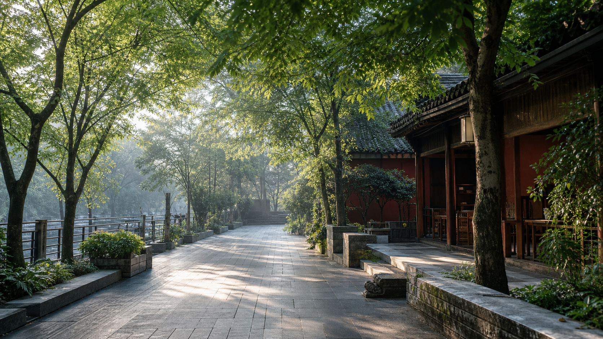
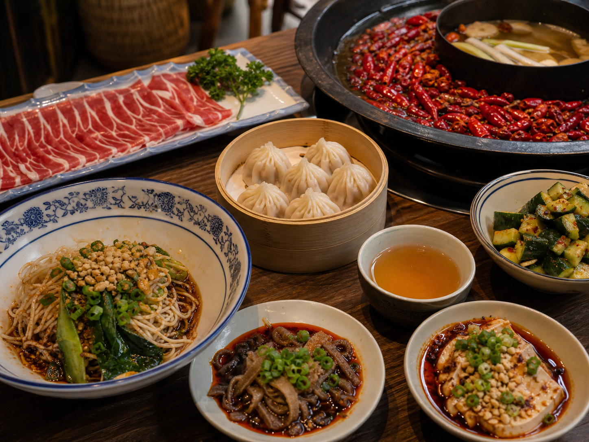

Route Planner
每日路线
今日路线
可加入地点
Food Notes
美食

Local Table
每天一顿重点，其他慢慢吃
这份清单按路线安排，不把吃饭变成赶场。火锅、串串、小吃、茶馆和夜宵都留位置。
火锅、冷锅串串、冒菜
适合 27 号第一晚，或 29 号自驾回城后。住太古里附近就近选，少排队。
回锅肉、宫保鸡丁、水煮牛肉
安排在 28 号或 30 号晚饭，选家常小馆比景区店更稳。
钟水饺、甜水面、担担面
人民公园、宽窄巷子、小通巷附近慢慢吃，适合边走边补。
盖碗茶、蛋烘糕、冰粉
人民公园留一段完整时间。拍照、休息、吃甜的都放这里。
青城山简餐，南桥晚饭
29 号中午从简，晚上在南桥或灌县古城吃本地菜。
建设路、九眼桥、玉林
熊猫基地当天看体力选一个方向，串串、小吃、酒馆都可以。
Photo Records